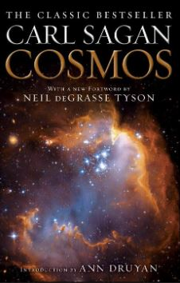
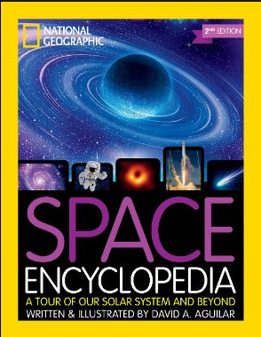

Books For Beginner
COSMOS by Carl Sagan

The Cosmos is written by astronomer, cosmologist, and science popularizer Carl Sagan. It is considered one of the best
non-fiction science-themed books ever. The 13-chapter reading explains the hardcore topics of the universe in a way that
is easy even for a layman.
It dives into every aspect of the universe. The title takes the reader on a fascinating journey where it touches on various
hot topics, including anthropology, cosmology, biology, history, and astronomy. The book complements the popular TV show of
the same name. The “Cosmos by Carl Sagan” is something every science person needs to read.
A Brief History of Time by Stephen Hawking
A Brief History of Time by Stephen Hawking is a New York Times Best Seller. The record-breaking book remained at the top
position for more than 143 weeks and sold over 10 million copies globally in 20 years.
In this book, Hawking talks about the universe, from point zero to the universe as we see it today. He molds this very
complicated science into an easy-to-digest language. The only formula you will see in the book is E=mC^2. If you want your
astronomy journey full of thrills, ABHoT is undoubtedly an excellent astronomy book for beginners.
Black Holes: The Reith Lectures by Stephen Hawking
In 2016 Professor Stephen Hawking delivered the BBC Reith Lectures on a subject that fascinated him for decades – black holes.
The book is assembled especially for black hole enthusiasts; from the discovery. The short 64-page book discusses everything
(including formation, behavior, and more) about the bizarre black holes with detailed graphical illustrations.
Astrophysics for People in a Hurry by Neil deGrasse Tyson
What is the nature of space and time? How do we fit within the universe? How does the universe fit within us? There’s no
better guide through these mind-expanding questions than acclaimed astrophysicist and best-selling author Neil deGrasse Tyson.
Unlike other regular writers, Tyson, in his ‘Astrophysics for People in a hurry,’ puts the vast complexity of the universe
down to the simplest possible form. So it’s consumable to minds of all types.
As you wait for your morning coffee to brew, for the bus, the train, or a plane to arrive, the Astrophysics for People in a
Hurry will reveal just what you need to be fluent and ready for the next cosmic headlines. From the Big Bang to black holes,
from quarks to quantum mechanics, and from the search for planets to the search for life in the universe.
An Introduction to Astrophysics by Basu
The invaluable book is for people who want to go deeper into astrophysics in a more scientific way. It is the second
edition by Mr. Basu, where his astrophysical expertise is in action.
He will discuss topics like a star system, dwarf galaxies, their clusters, and more. It’s suitable for both: under and
postgraduates.
This title is a perfect start for readers interested in Astrophysics and who want to get under the skin of the topic.
Parallel Worlds by Michio Kaku
Michio Kaku, a highly renowned cosmologist on earth, will guide you to answer some of the most provocative questions like;
Is our universe dying? Or could there be other universes?
And more. The best-selling author puts the most exciting title together. He will take you on a fascinating tour of cosmology,
M-theory, and its implications for the fate of the universe.
Nightwatch: A Practical Guide to Viewing the Universe by Terence Dickinson
It’s an original title for stargazers, from an award-winning author Terence Dickinson. The handbook is filled with a lot
of high-quality photographs and smooth readings.
It’s a practical guide to teach you everything, from choosing your first telescope to how to see the sky better and overall
understanding of the universe. In other words, Nightwatch is the most significant mate for space lovers of all types.
Far Out: A Space-Time Chronicle by Michael Benson
Far out is one of the most premium titles to make up for this list, from a top-selling author and filmmaker Michael Benson.
The Hardcover version features very high-quality images.
It is an outstanding collection of breathtaking, never-before-published photographs captured via telescopes, satellites,
and other sophisticated instruments from around the globe. But it’s not just an album! It’s full of excellent and informative
reading material. The book suits people of all ages, from kids to older ones who love pictures. It’s the best astronomy book
for those not so much fan of text only.
Space Encyclopedia: A Tour of Our Solar System and Beyond by NAT GEO

Authored by David A. Aguilar of the Harvard-Smithsonian Center for Astrophysics, the National Geographic Space Encyclopedia
is ideal for the family bookshelf, providing both accessible information for school reports and compelling reading on the
mysteries beyond our world.
It’s a book your kids are going to love!
This Encyclopedia combines high attention-gaining images with very easy-to-understand reads together. It indeed is a great
astronomy book for beginners.